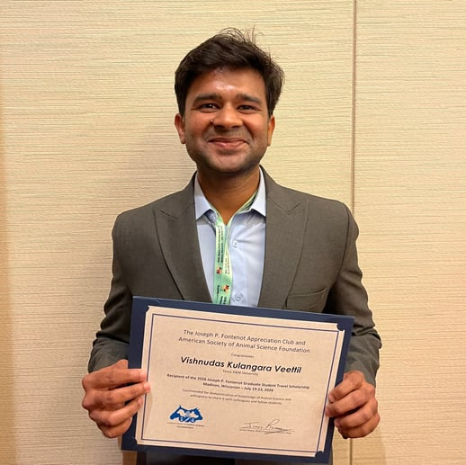
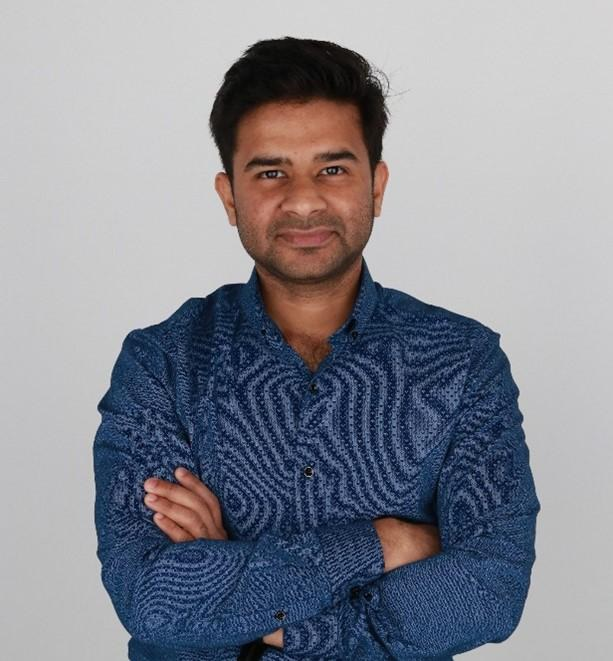
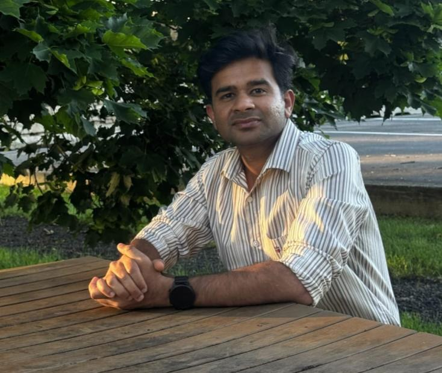
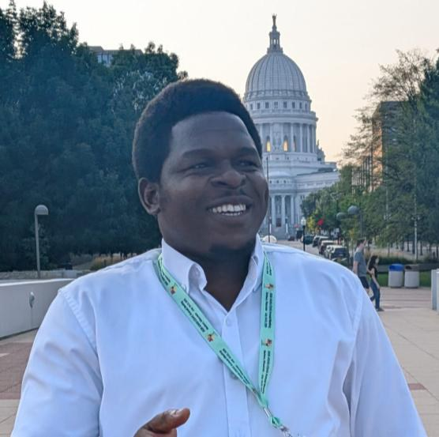
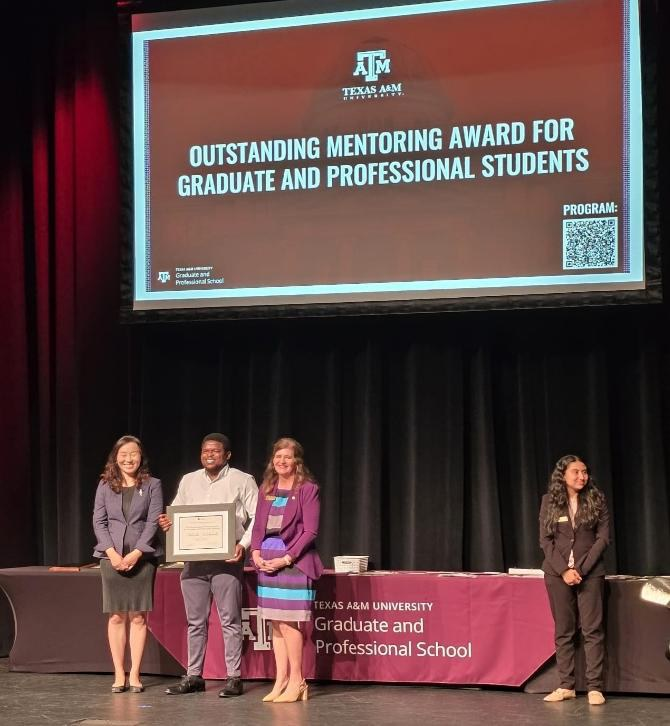
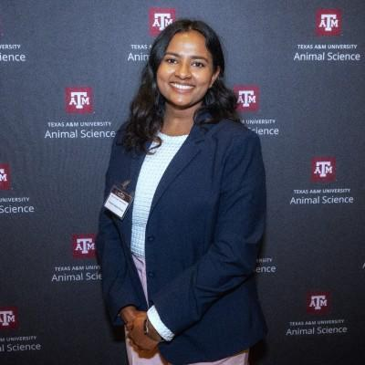
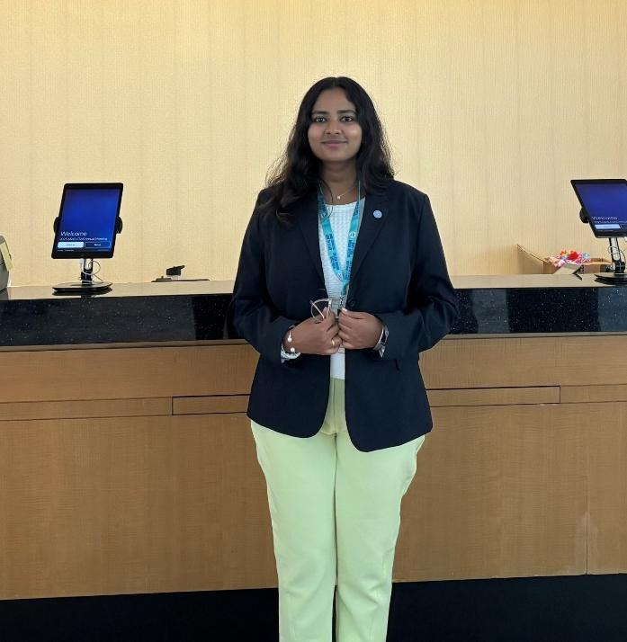

News
Lab updates, milestones, events, and highlights
Latest Updates by Year
2026
Awarded the Edgar Smith Fellowship
Awarded the Edgar Smith Fellowship, Texas A&M University.

Vishnudas Kulangara Veettil Receives Joseph P. Fontenot Travel Scholarship
Received the Joseph P. Fontenot Travel Scholarship Award, ASAS Annual Meeting, Madison, WI, July 2026.

Vishnudas Kulangara Veettil Awarded the Tom Slick Graduate Research Fellowship
Vishnudas Kulangara Veettil was awarded the Tom Slick Graduate Research Fellowship, Texas A&M University.

Vishnudas Kulangara Veettil Wins BIF Research Symposium Poster Award
Vishnudas Kulangara Veettil received a Graduate Student Poster Award at the Beef Improvement Federation (BIF) Research Symposium.

Adeolu Joseph Adekunle Awarded the TAMIDS Student Ambassador Scholarship
Adeolu Joseph Adekunle was awarded the Data Science (TAMIDS) Student Ambassador Scholarship, Texas A&M University.

Adeolu Joseph Adekunle Receives Outstanding Mentoring Award
Adeolu Joseph Adekunle received the Outstanding Mentoring Award for Graduate and Professional Students, Texas A&M University.
2025
Third Place, Oral Presentation Competition
Third place, Oral Presentation Competition, College of Agriculture and Life Sciences Research Symposium, Texas A&M University.
Awarded the Charles and Jean Smith Scholarship
Awarded the Charles and Jean Smith Scholarship, Texas A&M University.
2024
Selected for the Aggie Excellence Leadership Program (2024–2026)
Selected for the Aggie Excellence Leadership Program, Texas A&M University.

Serinmary Pulikkottil Rejimon Awarded the G. Rollie White–Borlaug Fellowship
Serinmary Pulikkottil Rejimon was awarded the G. Rollie White–Borlaug Fellowship, Texas A&M University.

Serinmary Pulikkottil Rejimon Received the C. Lock Travel Scholarship
Serinmary Pulikkottil Rejimon received the C. Lock Travel Scholarship (ADSA Graduate Student Travel Award) to attend the American Dairy Science Association (ADSA) Annual Meeting.
What We Share
Milestones
Paper acceptances, releases, grants, deployments.
Events
Workshops, presentations, invited talks, field days.
Collaborations
Partnerships with producers, industry, and research groups.